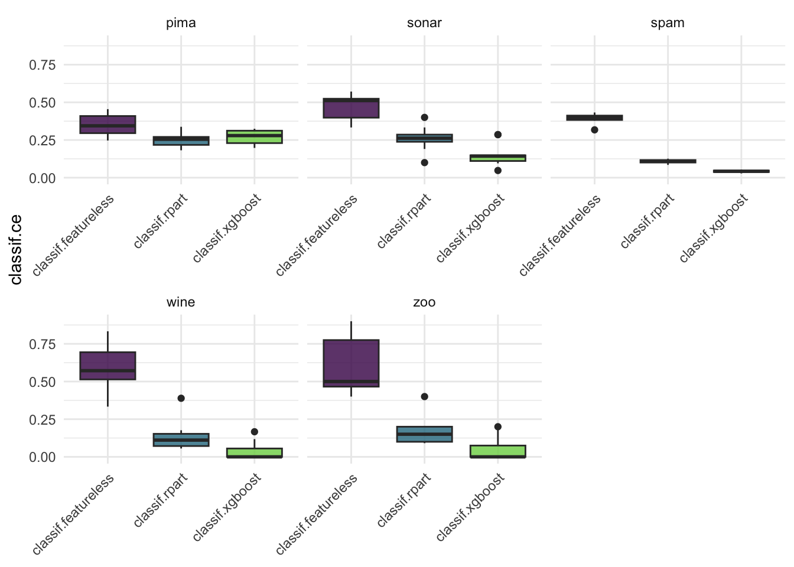

library(mlr3)
library(mlr3learners)
set.seed(37)
tasks <- tsks(c("pima", "sonar", "zoo", "spam", "wine")) # use `as.data.table(mlr_tasks)` to see built-in tasks
learner <- lrns(c("classif.featureless", "classif.rpart", "classif.xgboost"), predict_type = "prob")
resampling <- rsmps("cv")
bmr <- benchmark(benchmark_grid(tasks, learner, resampling))INFO [16:05:36.680] [mlr3] Running benchmark with 150 resampling iterations
INFO [16:05:36.716] [mlr3] Applying learner 'classif.featureless' on task 'pima' (iter 1/10)
INFO [16:05:36.727] [mlr3] Applying learner 'classif.featureless' on task 'pima' (iter 2/10)
INFO [16:05:36.732] [mlr3] Applying learner 'classif.featureless' on task 'pima' (iter 3/10)
INFO [16:05:36.737] [mlr3] Applying learner 'classif.featureless' on task 'pima' (iter 4/10)
INFO [16:05:36.741] [mlr3] Applying learner 'classif.featureless' on task 'pima' (iter 5/10)
INFO [16:05:36.746] [mlr3] Applying learner 'classif.featureless' on task 'pima' (iter 6/10)
INFO [16:05:36.750] [mlr3] Applying learner 'classif.featureless' on task 'pima' (iter 7/10)
INFO [16:05:36.757] [mlr3] Applying learner 'classif.featureless' on task 'pima' (iter 8/10)
INFO [16:05:36.762] [mlr3] Applying learner 'classif.featureless' on task 'pima' (iter 9/10)
INFO [16:05:36.766] [mlr3] Applying learner 'classif.featureless' on task 'pima' (iter 10/10)
INFO [16:05:36.771] [mlr3] Applying learner 'classif.rpart' on task 'pima' (iter 1/10)
INFO [16:05:36.788] [mlr3] Applying learner 'classif.rpart' on task 'pima' (iter 2/10)
INFO [16:05:36.801] [mlr3] Applying learner 'classif.rpart' on task 'pima' (iter 3/10)
INFO [16:05:36.810] [mlr3] Applying learner 'classif.rpart' on task 'pima' (iter 4/10)
INFO [16:05:36.818] [mlr3] Applying learner 'classif.rpart' on task 'pima' (iter 5/10)
INFO [16:05:36.828] [mlr3] Applying learner 'classif.rpart' on task 'pima' (iter 6/10)
INFO [16:05:36.836] [mlr3] Applying learner 'classif.rpart' on task 'pima' (iter 7/10)
INFO [16:05:36.844] [mlr3] Applying learner 'classif.rpart' on task 'pima' (iter 8/10)
INFO [16:05:36.854] [mlr3] Applying learner 'classif.rpart' on task 'pima' (iter 9/10)
INFO [16:05:36.862] [mlr3] Applying learner 'classif.rpart' on task 'pima' (iter 10/10)
INFO [16:05:36.870] [mlr3] Applying learner 'classif.xgboost' on task 'pima' (iter 1/10)
INFO [16:05:37.638] [mlr3] Applying learner 'classif.xgboost' on task 'pima' (iter 2/10)
INFO [16:05:38.049] [mlr3] Applying learner 'classif.xgboost' on task 'pima' (iter 3/10)
INFO [16:05:38.471] [mlr3] Applying learner 'classif.xgboost' on task 'pima' (iter 4/10)
INFO [16:05:38.884] [mlr3] Applying learner 'classif.xgboost' on task 'pima' (iter 5/10)
INFO [16:05:39.308] [mlr3] Applying learner 'classif.xgboost' on task 'pima' (iter 6/10)
INFO [16:05:39.720] [mlr3] Applying learner 'classif.xgboost' on task 'pima' (iter 7/10)
INFO [16:05:40.126] [mlr3] Applying learner 'classif.xgboost' on task 'pima' (iter 8/10)
INFO [16:05:40.537] [mlr3] Applying learner 'classif.xgboost' on task 'pima' (iter 9/10)
INFO [16:05:40.947] [mlr3] Applying learner 'classif.xgboost' on task 'pima' (iter 10/10)
INFO [16:05:41.463] [mlr3] Applying learner 'classif.featureless' on task 'sonar' (iter 1/10)
INFO [16:05:41.474] [mlr3] Applying learner 'classif.featureless' on task 'sonar' (iter 2/10)
INFO [16:05:41.482] [mlr3] Applying learner 'classif.featureless' on task 'sonar' (iter 3/10)
INFO [16:05:41.488] [mlr3] Applying learner 'classif.featureless' on task 'sonar' (iter 4/10)
INFO [16:05:41.500] [mlr3] Applying learner 'classif.featureless' on task 'sonar' (iter 5/10)
INFO [16:05:41.508] [mlr3] Applying learner 'classif.featureless' on task 'sonar' (iter 6/10)
INFO [16:05:41.517] [mlr3] Applying learner 'classif.featureless' on task 'sonar' (iter 7/10)
INFO [16:05:41.526] [mlr3] Applying learner 'classif.featureless' on task 'sonar' (iter 8/10)
INFO [16:05:41.538] [mlr3] Applying learner 'classif.featureless' on task 'sonar' (iter 9/10)
INFO [16:05:41.551] [mlr3] Applying learner 'classif.featureless' on task 'sonar' (iter 10/10)
INFO [16:05:41.564] [mlr3] Applying learner 'classif.rpart' on task 'sonar' (iter 1/10)
INFO [16:05:41.582] [mlr3] Applying learner 'classif.rpart' on task 'sonar' (iter 2/10)
INFO [16:05:41.599] [mlr3] Applying learner 'classif.rpart' on task 'sonar' (iter 3/10)
INFO [16:05:41.616] [mlr3] Applying learner 'classif.rpart' on task 'sonar' (iter 4/10)
INFO [16:05:41.636] [mlr3] Applying learner 'classif.rpart' on task 'sonar' (iter 5/10)
INFO [16:05:41.656] [mlr3] Applying learner 'classif.rpart' on task 'sonar' (iter 6/10)
INFO [16:05:41.681] [mlr3] Applying learner 'classif.rpart' on task 'sonar' (iter 7/10)
INFO [16:05:41.695] [mlr3] Applying learner 'classif.rpart' on task 'sonar' (iter 8/10)
INFO [16:05:41.714] [mlr3] Applying learner 'classif.rpart' on task 'sonar' (iter 9/10)
INFO [16:05:41.732] [mlr3] Applying learner 'classif.rpart' on task 'sonar' (iter 10/10)
INFO [16:05:41.747] [mlr3] Applying learner 'classif.xgboost' on task 'sonar' (iter 1/10)
INFO [16:05:41.902] [mlr3] Applying learner 'classif.xgboost' on task 'sonar' (iter 2/10)
INFO [16:05:42.054] [mlr3] Applying learner 'classif.xgboost' on task 'sonar' (iter 3/10)
INFO [16:05:42.340] [mlr3] Applying learner 'classif.xgboost' on task 'sonar' (iter 4/10)
INFO [16:05:42.534] [mlr3] Applying learner 'classif.xgboost' on task 'sonar' (iter 5/10)
INFO [16:05:42.688] [mlr3] Applying learner 'classif.xgboost' on task 'sonar' (iter 6/10)
INFO [16:05:42.843] [mlr3] Applying learner 'classif.xgboost' on task 'sonar' (iter 7/10)
INFO [16:05:43.015] [mlr3] Applying learner 'classif.xgboost' on task 'sonar' (iter 8/10)
INFO [16:05:43.179] [mlr3] Applying learner 'classif.xgboost' on task 'sonar' (iter 9/10)
INFO [16:05:43.331] [mlr3] Applying learner 'classif.xgboost' on task 'sonar' (iter 10/10)
INFO [16:05:43.488] [mlr3] Applying learner 'classif.featureless' on task 'zoo' (iter 1/10)
INFO [16:05:43.493] [mlr3] Applying learner 'classif.featureless' on task 'zoo' (iter 2/10)
INFO [16:05:43.499] [mlr3] Applying learner 'classif.featureless' on task 'zoo' (iter 3/10)
INFO [16:05:43.506] [mlr3] Applying learner 'classif.featureless' on task 'zoo' (iter 4/10)
INFO [16:05:43.512] [mlr3] Applying learner 'classif.featureless' on task 'zoo' (iter 5/10)
INFO [16:05:43.517] [mlr3] Applying learner 'classif.featureless' on task 'zoo' (iter 6/10)
INFO [16:05:43.522] [mlr3] Applying learner 'classif.featureless' on task 'zoo' (iter 7/10)
INFO [16:05:43.529] [mlr3] Applying learner 'classif.featureless' on task 'zoo' (iter 8/10)
INFO [16:05:43.535] [mlr3] Applying learner 'classif.featureless' on task 'zoo' (iter 9/10)
INFO [16:05:43.540] [mlr3] Applying learner 'classif.featureless' on task 'zoo' (iter 10/10)
INFO [16:05:43.546] [mlr3] Applying learner 'classif.rpart' on task 'zoo' (iter 1/10)
INFO [16:05:43.554] [mlr3] Applying learner 'classif.rpart' on task 'zoo' (iter 2/10)
INFO [16:05:43.562] [mlr3] Applying learner 'classif.rpart' on task 'zoo' (iter 3/10)
INFO [16:05:43.569] [mlr3] Applying learner 'classif.rpart' on task 'zoo' (iter 4/10)
INFO [16:05:43.608] [mlr3] Applying learner 'classif.rpart' on task 'zoo' (iter 5/10)
INFO [16:05:43.616] [mlr3] Applying learner 'classif.rpart' on task 'zoo' (iter 6/10)
INFO [16:05:43.624] [mlr3] Applying learner 'classif.rpart' on task 'zoo' (iter 7/10)
INFO [16:05:43.632] [mlr3] Applying learner 'classif.rpart' on task 'zoo' (iter 8/10)
INFO [16:05:43.639] [mlr3] Applying learner 'classif.rpart' on task 'zoo' (iter 9/10)
INFO [16:05:43.646] [mlr3] Applying learner 'classif.rpart' on task 'zoo' (iter 10/10)
INFO [16:05:43.653] [mlr3] Applying learner 'classif.xgboost' on task 'zoo' (iter 1/10)
INFO [16:05:43.824] [mlr3] Applying learner 'classif.xgboost' on task 'zoo' (iter 2/10)
INFO [16:05:44.007] [mlr3] Applying learner 'classif.xgboost' on task 'zoo' (iter 3/10)
INFO [16:05:44.175] [mlr3] Applying learner 'classif.xgboost' on task 'zoo' (iter 4/10)
INFO [16:05:44.341] [mlr3] Applying learner 'classif.xgboost' on task 'zoo' (iter 5/10)
INFO [16:05:44.514] [mlr3] Applying learner 'classif.xgboost' on task 'zoo' (iter 6/10)
INFO [16:05:44.684] [mlr3] Applying learner 'classif.xgboost' on task 'zoo' (iter 7/10)
INFO [16:05:44.852] [mlr3] Applying learner 'classif.xgboost' on task 'zoo' (iter 8/10)
INFO [16:05:45.019] [mlr3] Applying learner 'classif.xgboost' on task 'zoo' (iter 9/10)
INFO [16:05:45.188] [mlr3] Applying learner 'classif.xgboost' on task 'zoo' (iter 10/10)
INFO [16:05:45.346] [mlr3] Applying learner 'classif.featureless' on task 'spam' (iter 1/10)
INFO [16:05:45.353] [mlr3] Applying learner 'classif.featureless' on task 'spam' (iter 2/10)
INFO [16:05:45.358] [mlr3] Applying learner 'classif.featureless' on task 'spam' (iter 3/10)
INFO [16:05:45.365] [mlr3] Applying learner 'classif.featureless' on task 'spam' (iter 4/10)
INFO [16:05:45.371] [mlr3] Applying learner 'classif.featureless' on task 'spam' (iter 5/10)
INFO [16:05:45.376] [mlr3] Applying learner 'classif.featureless' on task 'spam' (iter 6/10)
INFO [16:05:45.385] [mlr3] Applying learner 'classif.featureless' on task 'spam' (iter 7/10)
INFO [16:05:45.391] [mlr3] Applying learner 'classif.featureless' on task 'spam' (iter 8/10)
INFO [16:05:45.397] [mlr3] Applying learner 'classif.featureless' on task 'spam' (iter 9/10)
INFO [16:05:45.403] [mlr3] Applying learner 'classif.featureless' on task 'spam' (iter 10/10)
INFO [16:05:45.409] [mlr3] Applying learner 'classif.rpart' on task 'spam' (iter 1/10)
INFO [16:05:45.456] [mlr3] Applying learner 'classif.rpart' on task 'spam' (iter 2/10)
INFO [16:05:45.504] [mlr3] Applying learner 'classif.rpart' on task 'spam' (iter 3/10)
INFO [16:05:45.549] [mlr3] Applying learner 'classif.rpart' on task 'spam' (iter 4/10)
INFO [16:05:45.596] [mlr3] Applying learner 'classif.rpart' on task 'spam' (iter 5/10)
INFO [16:05:45.643] [mlr3] Applying learner 'classif.rpart' on task 'spam' (iter 6/10)
INFO [16:05:45.689] [mlr3] Applying learner 'classif.rpart' on task 'spam' (iter 7/10)
INFO [16:05:45.733] [mlr3] Applying learner 'classif.rpart' on task 'spam' (iter 8/10)
INFO [16:05:45.800] [mlr3] Applying learner 'classif.rpart' on task 'spam' (iter 9/10)
INFO [16:05:45.845] [mlr3] Applying learner 'classif.rpart' on task 'spam' (iter 10/10)
INFO [16:05:45.890] [mlr3] Applying learner 'classif.xgboost' on task 'spam' (iter 1/10)
INFO [16:05:53.590] [mlr3] Applying learner 'classif.xgboost' on task 'spam' (iter 2/10)
INFO [16:06:01.466] [mlr3] Applying learner 'classif.xgboost' on task 'spam' (iter 3/10)
INFO [16:06:09.310] [mlr3] Applying learner 'classif.xgboost' on task 'spam' (iter 4/10)
INFO [16:06:16.781] [mlr3] Applying learner 'classif.xgboost' on task 'spam' (iter 5/10)
INFO [16:06:25.024] [mlr3] Applying learner 'classif.xgboost' on task 'spam' (iter 6/10)
INFO [16:06:33.151] [mlr3] Applying learner 'classif.xgboost' on task 'spam' (iter 7/10)
INFO [16:06:41.316] [mlr3] Applying learner 'classif.xgboost' on task 'spam' (iter 8/10)
INFO [16:06:49.482] [mlr3] Applying learner 'classif.xgboost' on task 'spam' (iter 9/10)
INFO [16:06:57.416] [mlr3] Applying learner 'classif.xgboost' on task 'spam' (iter 10/10)
INFO [16:07:05.166] [mlr3] Applying learner 'classif.featureless' on task 'wine' (iter 1/10)
INFO [16:07:05.172] [mlr3] Applying learner 'classif.featureless' on task 'wine' (iter 2/10)
INFO [16:07:05.177] [mlr3] Applying learner 'classif.featureless' on task 'wine' (iter 3/10)
INFO [16:07:05.182] [mlr3] Applying learner 'classif.featureless' on task 'wine' (iter 4/10)
INFO [16:07:05.188] [mlr3] Applying learner 'classif.featureless' on task 'wine' (iter 5/10)
INFO [16:07:05.193] [mlr3] Applying learner 'classif.featureless' on task 'wine' (iter 6/10)
INFO [16:07:05.198] [mlr3] Applying learner 'classif.featureless' on task 'wine' (iter 7/10)
INFO [16:07:05.216] [mlr3] Applying learner 'classif.featureless' on task 'wine' (iter 8/10)
INFO [16:07:05.222] [mlr3] Applying learner 'classif.featureless' on task 'wine' (iter 9/10)
INFO [16:07:05.228] [mlr3] Applying learner 'classif.featureless' on task 'wine' (iter 10/10)
INFO [16:07:05.235] [mlr3] Applying learner 'classif.rpart' on task 'wine' (iter 1/10)
INFO [16:07:05.244] [mlr3] Applying learner 'classif.rpart' on task 'wine' (iter 2/10)
INFO [16:07:05.252] [mlr3] Applying learner 'classif.rpart' on task 'wine' (iter 3/10)
INFO [16:07:05.263] [mlr3] Applying learner 'classif.rpart' on task 'wine' (iter 4/10)
INFO [16:07:05.271] [mlr3] Applying learner 'classif.rpart' on task 'wine' (iter 5/10)
INFO [16:07:05.279] [mlr3] Applying learner 'classif.rpart' on task 'wine' (iter 6/10)
INFO [16:07:05.287] [mlr3] Applying learner 'classif.rpart' on task 'wine' (iter 7/10)
INFO [16:07:05.295] [mlr3] Applying learner 'classif.rpart' on task 'wine' (iter 8/10)
INFO [16:07:05.303] [mlr3] Applying learner 'classif.rpart' on task 'wine' (iter 9/10)
INFO [16:07:05.311] [mlr3] Applying learner 'classif.rpart' on task 'wine' (iter 10/10)
INFO [16:07:05.321] [mlr3] Applying learner 'classif.xgboost' on task 'wine' (iter 1/10)
INFO [16:07:05.448] [mlr3] Applying learner 'classif.xgboost' on task 'wine' (iter 2/10)
INFO [16:07:05.835] [mlr3] Applying learner 'classif.xgboost' on task 'wine' (iter 3/10)
INFO [16:07:06.227] [mlr3] Applying learner 'classif.xgboost' on task 'wine' (iter 4/10)
INFO [16:07:06.395] [mlr3] Applying learner 'classif.xgboost' on task 'wine' (iter 5/10)
INFO [16:07:06.537] [mlr3] Applying learner 'classif.xgboost' on task 'wine' (iter 6/10)
INFO [16:07:06.893] [mlr3] Applying learner 'classif.xgboost' on task 'wine' (iter 7/10)
INFO [16:07:07.032] [mlr3] Applying learner 'classif.xgboost' on task 'wine' (iter 8/10)
INFO [16:07:07.164] [mlr3] Applying learner 'classif.xgboost' on task 'wine' (iter 9/10)
INFO [16:07:07.290] [mlr3] Applying learner 'classif.xgboost' on task 'wine' (iter 10/10)
INFO [16:07:07.427] [mlr3] Finished benchmarkmlr3viz::autoplot(bmr, type = "boxplot")